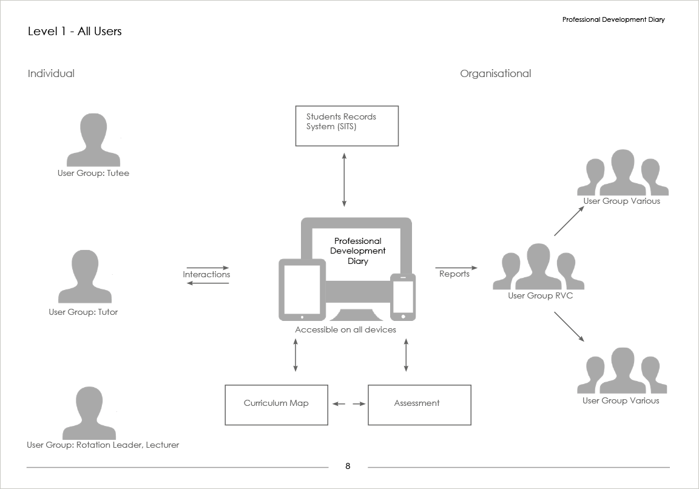

Folium

Folium is an online tool that helps individuals to maximize their learning and track their progress towards professional competency. This is achieved through skills logging, tutor supported placement planning and reflection, and through recording of and analysis of learning experiences throughout the course. The reporting function allows the organisations to monitor student progress, to review course outcomes and support course development.
History
Folium in its original incarnation (Day One Skills Online) was developed in 2010 to address the issues of veterinary students achieving competence in their ‘Day One Skills’ by introducing an online logbook for students to record where and when they advance in a particular skill, enabling them to track their personal progress and to visually identify their ‘gaps’.
Over the years functionality was added to the product that was not initially conceived. In 2016 requirements outweighed the usability of the product. I approached senior management and academics and presented a case for the original product to be retired and a new application to be built from the ground up taking into account functionally introduced over its life with possible future requirements not yet identified.
UX Design
User Research
User research included interviews with students, tutors, course leaders and educational specialists. A wish list was gathered and the functionality was prioritised for development. Top level system maps were created to display broader concepts of information flow and function along with user persona, and user walkthroughs. Four main user groups were identified: Tutees, Tutors, Group Leaders and Organisational.

With site funcitionality being complex, the information architecture is shallow. The example below demostrates the IA for Tutee section.

Wireframes
Initial low-fi wireframes were created in Illustrator. The wireframes were used for paperbase walkthroughs demonstrated to all user groups ensuring concepts were understood.


The wireframe were imported into Azure to create low fidelity walkthroughs.


UI Design
I developed initial screens in Illustrator using a bootstrap gridded template to ensure even column for a responsive design.

Prototypes
Initial pages for user testing were developed using Bootstap framework. Navigation and limited functionality were provide enabling stakeholders a clear understanding of the look and feel of product.

After a number of interations of the original screen the following evolved.

User Testing
A number of different user testing methods have been used to this point. Initially task scenarios and observations with individuals were used to gain qualitative insights into any usability issues. Large group (60 people) task scenario’s were also used to test application on various devices. (Need to find the name of the software) provide responses to various questions in a short space of time. User testing is ongoing
Latest Developments
Folium is still in development. A working version of Folium can be viewed here: http://folium.rvc.ac.uk . This instance of Folium has been created for Veterinary Students at the Royal Veterinary College. It is accessable via a Google logon. The Placements and Reports section are currently in development. Placements to be released by the end of June.
Folium has been created to ensure that any skills/competency list from any course or institute can be uploaded into the application. Folium is to be open sourced by the end of June 2017
Visit Application